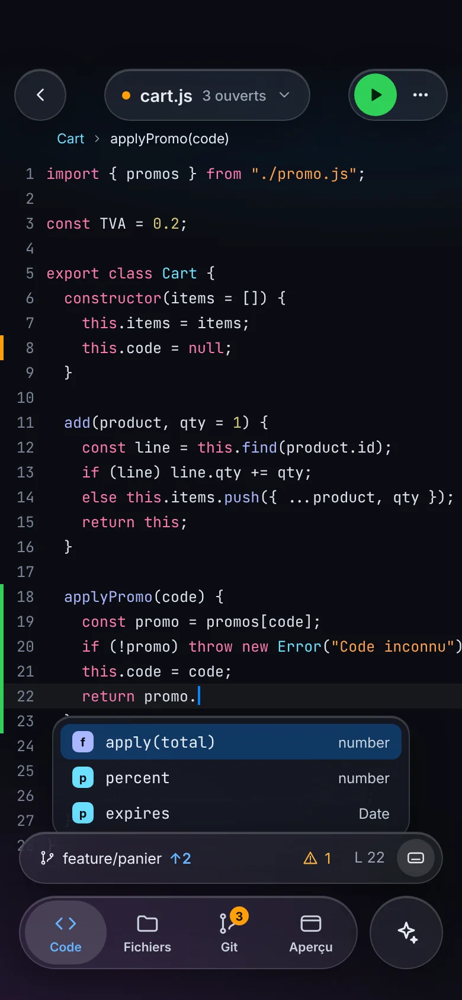
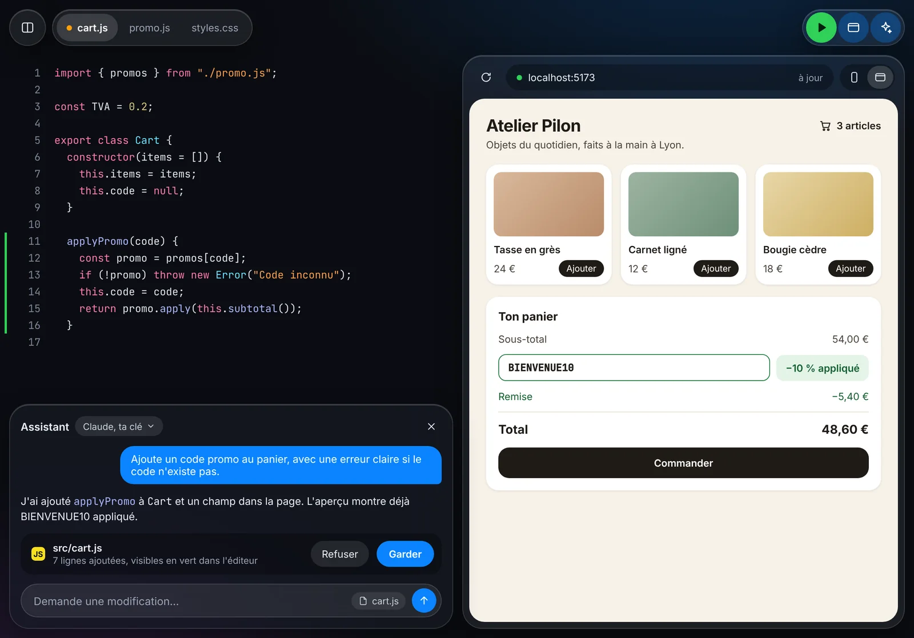
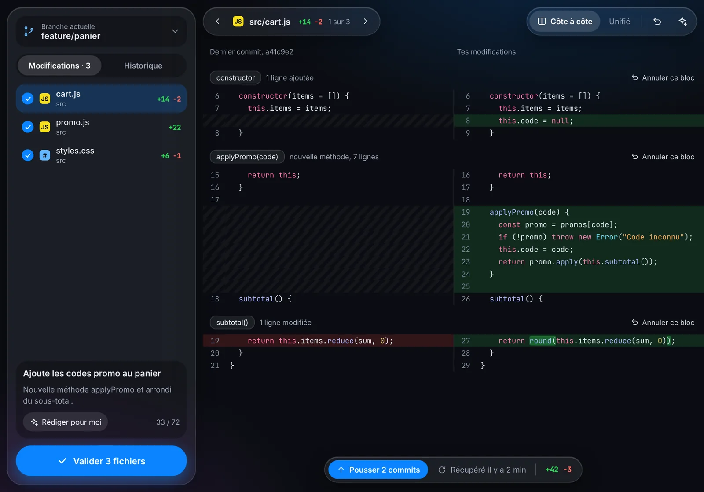
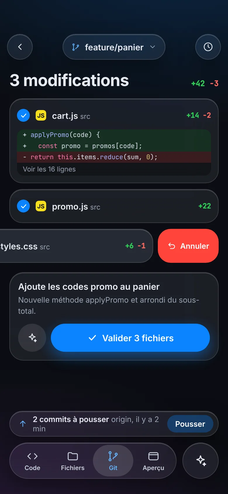
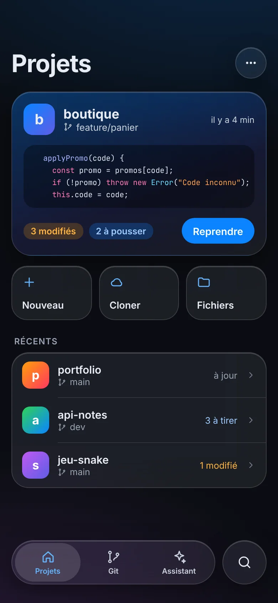
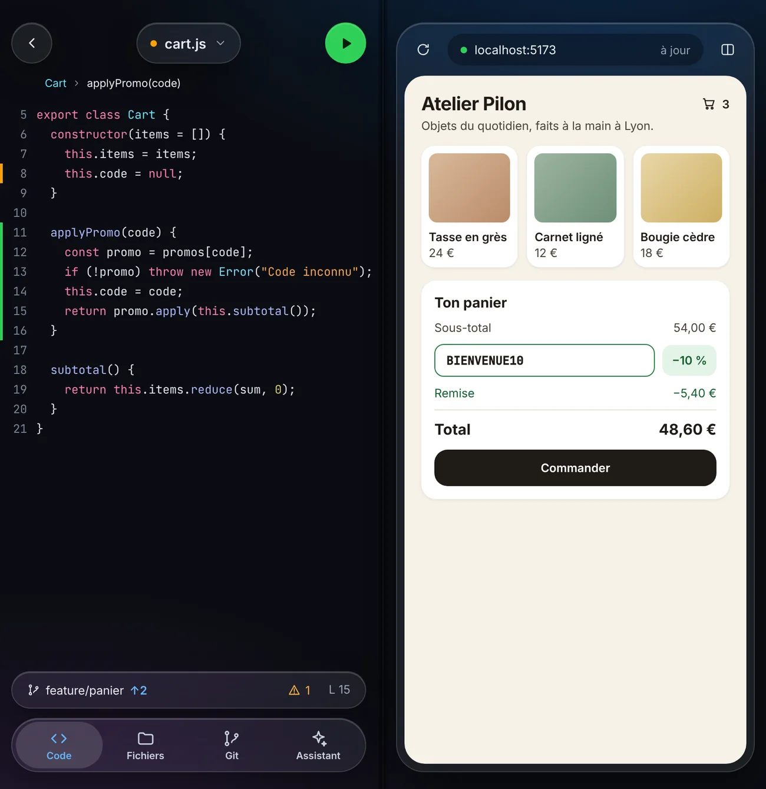
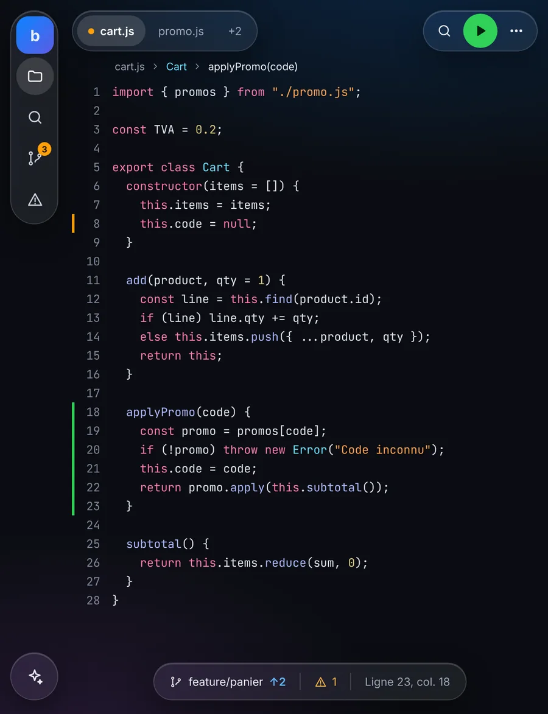
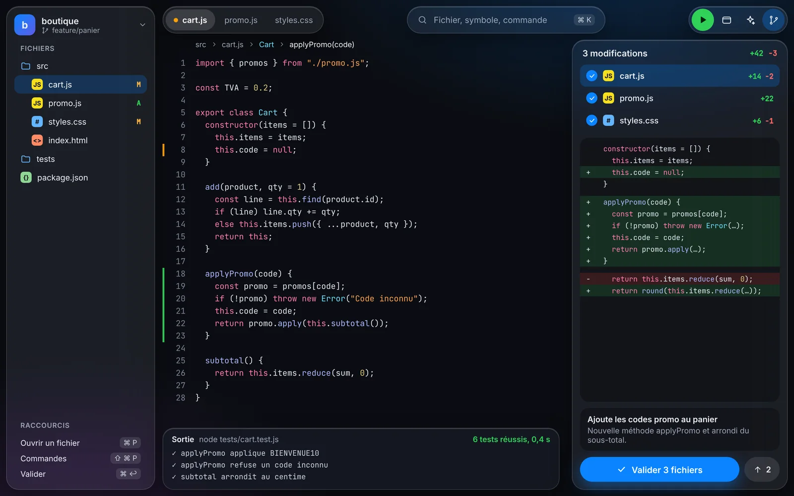

Native speed
Swift, SwiftUI and the iOS text engine. The editor opens instantly and scrolls smoothly, even on a big file.

The native code editor, written in Swift and built to be the fastest on iPhone and iPad. Code fills the screen, errors show up as you type, and Git is built in. AI is optional, with the provider of your choice.
100% native SwiftUI · Works offline · No iCode account

Everything you expect from JetBrains or VS Code, rewritten in Swift for iPhone and iPad, with no web view between you and your code.
Swift, SwiftUI and the iOS text engine. The editor opens instantly and scrolls smoothly, even on a big file.
Problems are underlined as you type, explained next to the line and gathered in one panel. One tap and you are there.
File and project symbols, properties, keywords, snippets. It pops up on its own and accepts with one key.
iCode recognizes each file’s language and adapts highlighting, completion and diagnostics. Swift, JavaScript, TypeScript, Python, HTML, CSS and more.
Go to definition, find usages, go to symbol, project-wide rename, find and replace everywhere.
Clone, pull and push to GitHub, GitLab or your server, a live web preview, and the AI of your choice plugged in with your key.
Sidebar, tabs and actions float in Liquid Glass above your code, which scrolls underneath. Nothing hides what you write.
A variable never read, a misspelled name, a stray parenthesis: iCode underlines it as you type and tells you why, right on the line.
The web preview updates on every keystroke. Ask the assistant for a change: it edits your files, you keep or reject.

Attach a keyboard to your iPad and get the JetBrains and VS Code shortcuts you know. Hold ⌘ to see them all.
Try it: press ⌘⇧P (or Ctrl⇧P) now.
Inspired by GitHub Desktop. Check your files, review the diff, write your message, commit. Branches and merges are one tap away.
A side-by-side diff, hunk by hunk, labelled with the function it touches. Revert a hunk with one tap, let the assistant write your message, then commit.


iCode works great without AI. If you want it, plug in your favorite provider with your own API key. An assistant reads and edits your files, and you approve every change.
SwiftUI, Liquid Glass, widgets, Live Activities and Dynamic Island. iCode feels like an Apple app.
Pushing to originfeature/cartClone, pull, push and AI replies keep going while you do something else. Follow it all from the Lock Screen.
One design that folds: one column on iPhone, two panes on an open foldable, the sidebar on iPad, and a Mac version in the works.




iCode’s new design, screen by screen.
The editor, code intelligence, local Git and AI with your key are free. Pro adds remote Git, multiple AIs, agent mode, SSH and iCloud.
Launch prices including French VAT; local prices may vary. Auto-renewing subscription, managed and cancelled from your App Store account settings. Lifetime is a one-time purchase. AI usage is billed by the provider you choose.
No. iCode is first a complete code editor and Git client. The AI assistant is optional: it only turns on once you add a provider key.
On your device. Projects are stored locally and keys in the iOS Keychain. iCode has no server: when you use AI, the request goes straight from your device to the provider you picked. Details in our privacy policy.
GitHub, GitLab, Bitbucket, Gitea or your own server: any repository reachable over HTTPS. For a private repository, you use a personal access token.
The live preview renders your HTML, CSS and JavaScript pages next to the code. Beyond that, iCode focuses on writing, navigating and Git.
iPhone, foldable iPhone and iPad on iOS 17 or later. Liquid Glass, Live Activities and the Dynamic Island shine on iOS 26 and supported devices.
The beta runs on TestFlight. Write to us from the Support page to get an invitation.
A real IDE and Git, on iPhone and iPad. No compromises.
Join the TestFlight beta